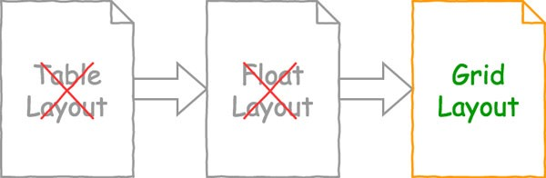

Содержание:
- Видео инструкция по использованию
- Вёрстка на Grid в CSS. Полное руководство и справочник
- Введение
- Как это работает?
- Создаем Grid
- Создаем шаблон сайта с CSS Grid
- Создаем адаптивный Grid
- Гриды с медиа запросами
- Совмещаем grid c block
- Auto-flow — строки или колонки
- В конец урока
Видео инструкция по использованию
Вёрстка на Grid в CSS. Полное руководство и справочник
Grid модуль для CSS был разработан рабочей группой CSS для того, чтобы сделать создание шаблонов в CSS максимально удобным. Он попал в рекомендации по официальному внедрению в феврале 2017 года, а основные бразуеры начали его поддержку уже в марте 2017 года.
CSS Grid скоро станет неотъемлемой частью набора инструментов любого фронт-энд разработчика. И если вы один из них, то вам придется учить CSS Grid — который уже точно станет неоспоримым умением для любой позиции в фронтэнд разработке.
С этим мощным функционалом и интуитивно понятным синтаксисом, шаблоны на grid несомненно будут менять представление о создании веба как такового.
Введение
CSS Grid это новая модель для создания шаблонов, оптимизированная для создания двумерных макетов. Она идеально подходит для: шаблонов сайтов, форм, галерей и всего, что требует точного и отзывчивого позиционирования.
С развитием веба, в последние годы, разработка шаблонов веб-сайтов стала всё более затруднительной. В ранние годы веба, HTML таблицы зачастую использовались для многоколоночных шаблонов, форм и т.д. Но у этого метода есть свои недостатки. Это означает то, что представление шаблона, как такового должно было быть сделано на уровне разметки, таким образом стирая различие между представлением и контентом. По факту, таблицы были созданы для того, чтобы содержать табличные данные и только для этого. И уже даже не касаясь семантических проблем, табличные шаблоны совершенно не созданы для адаптивного дизайна.
Флоаты в конечном итоге заменили таблицы как всеобще приемлемый и рекомендованный метод создания разметки шаблона, так как он позволяет нам позиционировать элементы вне зависимости от изначальной разметки. Тем не менее, пока этот метод считался значительным улучшением на фоне табличной верстки, у него тоже были свои ограничения. Флоаты в основном были разработаны для создания шаблонов документов и они не совсем были подходящими для создания сложных шаблонов приложений, которые сейчас распространены в сети и которые мы привыкли видеть в своих браузерах. Флоат элементы сложно контролировать, особенно на девайсах и viewport'ах разных размеров. Это привело к различным гридободобным хакам, которые уже стали нормой, большинству из них требовалась дополнительная разметка, которая отвлекала от общей концепции разделения контента. Таким образом рабочая группа CSS находилась в поиске наилучшего решения для всех задач.
CSS Grid модель рассматривает все эти проблемы и даже более. Она позволяет нам создавать продвинутые шаблоны за малую долю времени от того, которое бы вы потратили на них с флотами и с гораздо меньшим количеством кода.
Хотя flexbox уже позволил разработчикам начать уходить от флоат элементов, но он работает только в одном измерении. Grid CSS же это делает в двух, таким образом лучше подходя для создания сложных, комплексных шаблонов.
Как это работает?
Grid шаблон работает по системе сеток. Grid это набор пересекающихся горизонтальных и вертикальных линий, которые создают размерность и позиционируют систему координат для контента в самом grid-контейнере.
Чтобы создать Grid разметку, вам просто нужно выставить элементу display: grid. Этот шаг автоматически сделает всех прямых потомков этого элемента — grid элементами. После этого вы можете смело использовать разнообразные grid свойства для выравнивания размеров и позиционирования элементов должным образом. Обычно первым шагом является определение того, сколько колонок и рядов есть в гриде. Но даже это опциональный момент — как вы увидите далее.
Это пример грида с четырьмя рядами и тремя колонками. Он состоит из 12 grid элементов. Каждый из этих элементов отмечен зеленым и между ними есть небольшое расстояние.
Все эти grid элементы одного размера, но они могли бы быть совершенно любого размера, такого, какого мы захотим. Мы могли бы сделать их совершенно разными по размерам, если бы захотели. Некоторые из них могли бы охватывать несколько столбцов и рядов, другие могли бы оставаться размеров с одну ячейку. Далее в этой статье вы узнаете об этих и других функциях в grid, некоторые из которых вполне смогут вас удивить.
Создаем Grid
Пример простого 3x3 грида с небольшими отступами между элементами.
А вот код:
-- HTML --
<div id="grid">
<div>1</div>
<div>2</div>
<div>3</div>
<div>4</div>
<div>5</div>
<div>6</div>
<div>7</div>
<div>8</div>
<div>9</div>
</div>
-- CSS --
#grid {
display: grid;
grid-template-rows: 1fr 1fr 1fr;
grid-template-columns: 1fr 1fr 1fr;
grid-gap: 2vw;
}
#grid > div {
font-size: 5vw;
padding: .5em;
background: gold;
text-align: center;
}
Давайте внимательнее вглядимся в код. Таким образом мы видим обычный HTML, состоящий из элементов, вложенных в свой внешний элемент. Но именно для наших целей, внешний <div> это контейнер гридов. Соотвественно, все элементы вложенные в него будут являться грид элементами.
Но по факту, это не будет полноценными гридом, пока мы не применим кое-какой CSS для него.
Вот объяснение того, что написано в этом CSS:
-
display: grid - Превращает элемент в grid контейнер. Это все, что нужно для того, что
создать грид.
- можете использовать display: inline-grid, что создать строчный грид-контейнер.
- Или же вы можете использовать display: subgrid, чтобы создать подсетку, это значение используется на самих grid элементах.
- grid-template-rows: 1fr 1fr 1fr Выстраивает ряды в гриде. Каждое значение представляет размер ряда. В этом случае все значения равны 1fr. Что такое fr можно почитать ТУТ. Но конечно же, для этого можно было бы использовать разные значения, такие как 100px, 7em, 30% и так далее.
- grid-template-columns: 1fr 1fr 1fr - тоже самое, что и выше, только определяет колонки в гридах.
-
grid-gap: 2vw - Выставляет разрыв. То есть пробелы между грид элементами. Тут мы используем
vw единицу, которая относительна ширине viewport, но также мы можем использовать 10px, 1em и т. д.
- Grid-gap свойство это сокращение для grid-row-gap и grid-column-gap свойств.
- Ну, а другая часть кода #grid > div { просто назначает разные стили грид элементам.
Функция repeat()
Вы можете использовать функцию repeat() для повторяющихся объявлений значения размера элемента. Для примера, вместо того, чтобы делать это:
grid-template-rows: 1fr 1fr 1fr 1fr 1fr;
Мы можем сделать так:
grid-template-rows: repeat(5, 1fr);
Что значительно сократит количество кода, которое вам нужно написать, особенно, если вы работаете с большими и часто
повторяющимися элементами в гридах.
Создаем шаблон сайта с CSS Grid
Гриды включают в себя интуитивный «ASCII-графический» синтаксис, в котором вы можете виртуально «видеть» шаблон в коде, поэтому становится очень легко создавать и изменять сам шаблон. Даже значительные изменения могут быть сделаны за несколько секунд. Этот интуитивный синтаксис также помогает с адаптивным веб-дизайном. Создание разных шаблонов для разных устройств становится довольно пустяковым делом при использовании грид разметки.
Давайте теперь создадим шаблон сайта, который выглядит таким образом:

А вот код этого шаблона (страница с шаблоном):
-- HTML --
<body>
<header id="pageHeader">Header</header>
<article id="mainArticle">Article</article>
<nav id="mainNav">Nav</nav>
<div id="siteAds">Ads</div>
<footer id="pageFooter">Footer</footer>
</body>
-- CSS --
body {
display: grid;
grid-template-areas:
"header header header"
"nav article ads"
"footer footer footer";
grid-template-rows: 60px 1fr 60px;
grid-template-columns: 20% 1fr 15%;
grid-gap: 10px;
height: 100vh;
margin: 0;
}
header, footer, article, nav, div {
padding: 20px;
background: gold;
}
#pageHeader {
grid-area: header;
}
#pageFooter {
grid-area: footer;
}
#mainArticle {
grid-area: article;
}
#mainNav {
grid-area: nav;
}
#siteAds {
grid-area: ads;
}
Создаем адаптивный Grid
В шаблоне созданном на гридах есть такие значения, как auto-fill и auto-fit, которые позволяют вам создавать грид с множеством треков определенного размера, которые будут помещаться в указанном контейнере. Это говорит о том, что грид является адаптивным, то есть в нем элементы меняют свои позиции с тем, как вы меняете размер окна браузера.
Пример использования Auto-fill и Auto-fit:
-- HTML --
<div class="grid auto-fill">
<div>1</div>
<div>2</div>
<div>3</div>
<div>4</div>
<div>5</div>
<div>6</div>
</div>
<div class="grid auto-fit">
<div>1</div>
<div>2</div>
<div>3</div>
<div>4</div>
<div>5</div>
<div>6</div>
</div>
-- CSS --
.grid {
display: grid;
grid-gap: 2vw;
border: 1px solid black;
margin: 10px;
}
.grid > div {
font-size: 5vw;
padding: .5em;
background: gold;
text-align: center;
}
.auto-fill {
grid-template-columns: repeat(auto-fill, minmax(150px, 1fr));
}
.auto-fit {
grid-template-columns: repeat(auto-fit, minmax(150px, 1fr));
}
Посмотреть ТУТ
Использование двух маленьких грид элементов тут поможет показать всю концепцию работы. Auto-fill оставляет пустые треки в конце по указанным размерам, а auto-fit растягивает пустой трек, что ведёт к заполнению треков растянутыми элементами для заполнения пространства.
Гриды с медиа запросами
Одной из сильных сторон гридов является то, что вы можете создать уже совершенно другой шаблон за секунды.
Это делает CSS Grid идеальным для медиа запросов. Мы можем просто переназначить значения в ASCII-графике и обернуть результат в конечный медиа запрос.
-- HTML --
<body>
<header id="pageHeader">Header</header>
<article id="mainArticle">Article</article>
<nav id="mainNav">Nav</nav>
<div id="siteAds">Ads</div>
<footer id="pageFooter">Footer</footer>
</body>
-- CSS --
body {
display: grid;
grid-template-areas:
"header header header"
"nav article ads"
"footer footer footer";
grid-template-rows: 80px 1fr 70px;
grid-template-columns: 20% 1fr 15%;
grid-row-gap: 10px;
grid-column-gap: 10px;
height: 100vh;
margin: 0;
}
/* Stack the layout on small devices/viewports. */
@media all and (max-width: 575px) {
body {
grid-template-areas:
"header"
"article"
"ads"
"nav"
"footer";
grid-template-rows: 80px 1fr 70px 1fr 70px;
grid-template-columns: 1fr;
}
}
header, footer, article, nav, div {
padding: 1.2em;
background: gold;
}
#pageHeader {
grid-area: header;
}
#pageFooter {
grid-area: footer;
}
#mainArticle {
grid-area: article;
}
#mainNav {
grid-area: nav;
}
#siteAds {
grid-area: ads;
}
Посмотреть ТУТ
Это трехколоночный шаблон на большом viewport и он сжимается в одноколоночный на маленьких устройствах. Таким образом, этот пример будет выглядеть уже по-другому в зависимости от размера экрана.
Совмещаем grid c block
В зависимости от требований к вашему шаблону, нет ничего, что остановит вас изменить мобильную версию на display: block. Как тут:
@media all and (max-width: 575px) {
body {
display: block;
}
}
Это будет работать также как и в примере выше, но по-дефолту, элементы встанут по своему исходному порядку.
В примере выше, мобильная версия имеет nav под ads, но если бы мы использовали display: block,
то nav был бы выше ads.
Также используя этот метод вам также может понадобится добавление несколькоих внешних отступов для компенсации отсутствия разрывов, которые были включены в версию с гридами.
Auto-flow — строки или колонки
Пока что мы создавали только дополнительные строки, чтобы уложить дополнительные грид-элементы. Но что, если мы хотим использоваться дополнительные колонки?
Для этого у нас есть свойство grid-auto-flow
Это свойство позволяет указывать, что нужно использовать для авто-размещения элементов, строки или колонки. Другими словами, вы можете указать как будет расти неявный грид — в виде строк или колонок. Изначальное значение тут — row, что объясняет то, почему на примере выше были добавлены дополнительные строки, вместо колонок. Но если вы предпочитаете использовать колонки, то вы можете использовать это:
grid-auto-flow: column;
Вот что случится, если мы применим это к первому примеру.
-- HTML --
<div id="grid">
<div>1</div>
<div>2</div>
<div>3</div>
<div>4</div>
<div>5</div>
<div>6</div>
</div>
-- CSS --
#grid {
display: grid;
grid-template-rows: 80px 80px;
grid-template-columns: 1fr 1fr;
grid-gap: 10px;
grid-auto-flow: column;
}
#grid > div {
padding: .5em;
background: gold;
text-align: center;
}
Посмотреть ТУТ
Само собой, вы можете попробовать пойти дальше в этом примере и использовать grid-auto-columns свойство, чтобы изменить ширину автоматически сгенерированной колонки. Так что если вы хотите, чтобы все колонки выше, были одинаковой ширины, вам надо использовать grid-auto-columns: 1fr;.
Имейте ввиду, что выставляя column для grid-auto-flow вы изменяете поток грид элементов. Вы уже могли заметить, что грид элементы в примере выше размещаются вдоль каждой колонки, вместо каждой строки.